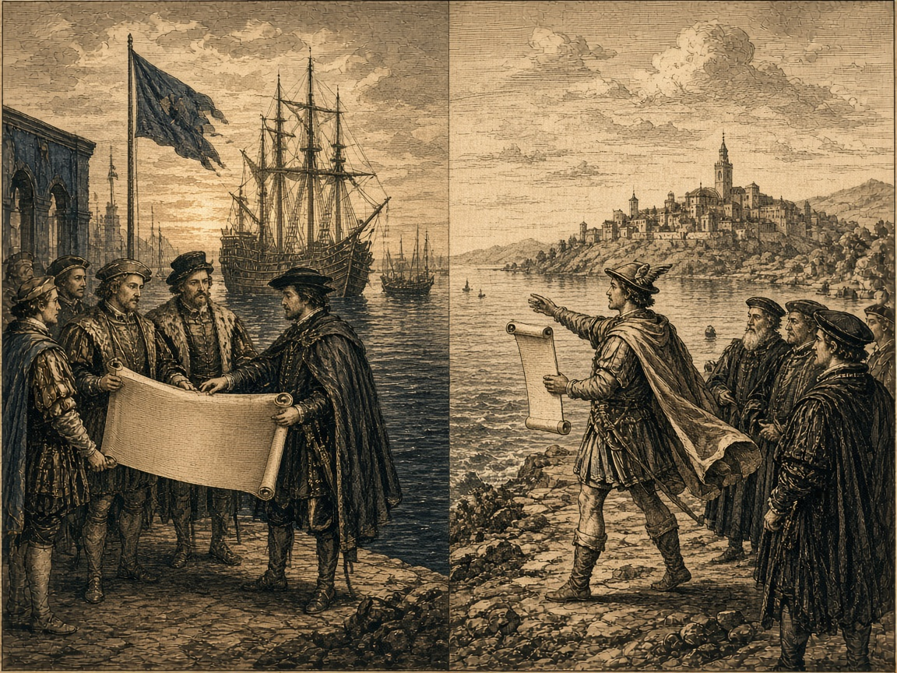
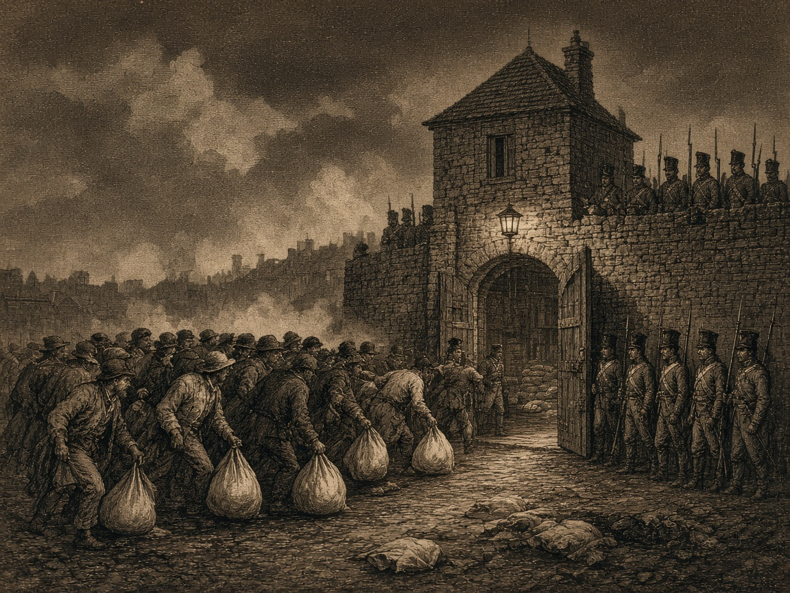

翠湖、オリョルッルと開戦 同じ期に藍岬は停戦
湖の共和国が王国へ戦端 藍岬との戦争は合意で終結 金野では暴動十三と兵站壊滅

【総合部】第201期、翠湖自治州とオリョルッル王国の戦争が勃発した。両国は前期から開戦を予告しており、今期その日程が到来した。同じ更新で、オリョルッル王国と藍岬共和国連邦は停戦合意により戦争を終結させた。オリョルッルは一つの戦線を閉じる一方、翠湖との新たな戦いに入る。翠湖の湖岸と王国の領地を結ぶ前線がどこに定まるか、次期の部隊配置が焦点となる。詳報は5面。

金野、暴動十三 自国兵站が壊滅
金野伯爵領は食料ゼロのまま十三か所で暴動が起き、兵站基地（63,14）へ住民が殺到して壊滅させた。人口は五万千二百人まで減り、領内の配給を担う施設も失った。オラニウム連邦は朱川共和国へPPミサイルを撃ち、現代都市（67,8）を占領した。火災は二十六件、人口減は十万千七百人。軍事衝突と暮らしの崩れが同じ週に各地で進んだ。国特集は8面のチェス＝シロバキア共和国。